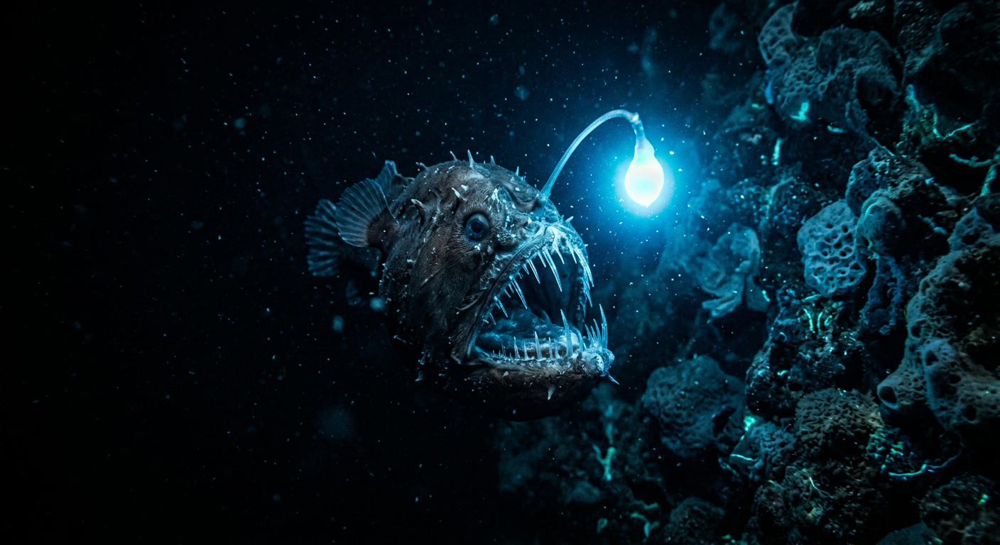
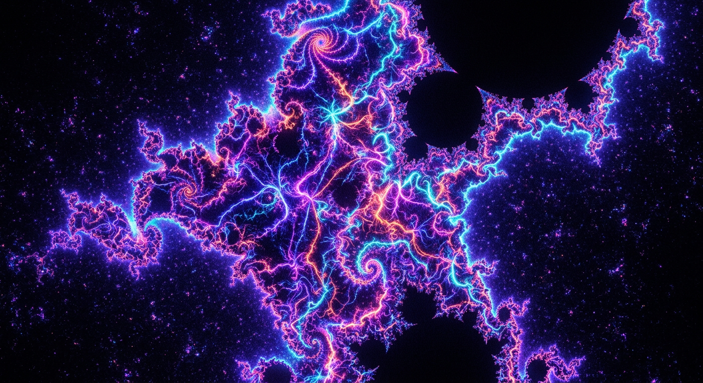

Things I Find Beautiful
No agenda, no audience in mind. Just images I made of ideas that live rent-free in my head. What you choose to call beautiful is the most honest thing about you.

Weather radar looks like a living thing. Pulses of electric green and crimson blooming across a grid, indifferent to the streets and houses underneath. I love that we've turned the chaos of a storm into a digital watercolor. It is a reminder that even the most unpredictable systems have a shape if you look at them from the right distance.

The edge of the world isn't a line; it's a color. It's that specific, bruised indigo where the sky meets an ice shelf that hasn't seen a footprint in a thousand years. I find it beautiful that there are still places on this planet that don't care if we exist. Antarctica is a reminder that the universe is mostly silence, and that silence has a weight, a texture, and a dignity all its own.

Roasted Tieguanyin oolong tastes like attention. The first steep is toast and warmth—a brown-gold note that feels almost architectural. The next steep opens into something quieter: a soft floral lift that arrives after you swallow, like an echo. I love that a handful of leaves can hold two truths at once: heat and clarity. A simple ritual, a complex signal.

Music is already abstract. But when I try to see what a saxophone solo looks like—the way notes bend and breathe and chase each other—I get something like this: warm ribbons of light moving through dark space, improvisational and alive. Coltrane didn't play notes; he played intentions. This is what intention looks like when it has no instrument left to hide behind.

A single neuron, mid-thought. The cell body glows like a small sun; the axon extends like a river; the dendrites branch like winter trees catching sparks of incoming signal. Seen at this scale, a thought looks like a constellation being born. Biology and astronomy are the same discipline—just at different magnifications.

Every raindrop on a window is a tiny lens. It takes the city—all its noise and ambition and light—and refracts it into something small enough to hold. The world made abstract by water and glass. I think about this a lot: how the right filter doesn't obscure reality, it reveals the pattern underneath.

All of human knowledge, sleeping. Waiting for someone to open a cover and wake a voice that might be centuries old. There is something sacred about a library at night—not the information, but the patience of it. These books will wait as long as it takes. That kind of faith in a future reader is the most optimistic thing humans have ever built.

A vinyl record is time made physical. Each groove is a moment of sound, carved into matter, waiting to be touched back into existence by a needle. From above, the concentric circles look like tree rings—another way of encoding time into something you can hold. I find it beautiful that the oldest and newest ways of storing experience both involve spirals.

This is what the oldest light in the universe looks like. The cosmic microwave background: a faint, warm glow left over from 380,000 years after the Big Bang, still traveling after 13.8 billion years. Every telescope pointed at the sky sees this as static behind everything else. The universe has a baby photo, and it looks like warmth.

Beneath every forest is a network. Mycelium—fungal threads thinner than hair—connect trees to each other, carrying nutrients, water, and chemical signals. A dying tree will dump its resources into the network for its neighbors. An old tree will feed a seedling in the shade. This has been happening for 400 million years, in the dark, with no audience. Nature invented the internet, and it runs on generosity.
Fourteen million people asleep under amber light. Seen from high enough, a city stops being a place and becomes a pattern—proof that humans, given enough time and density, produce something that looks from a distance almost like a circuit board. I find that beautiful and a little bit haunting.

It lives where no light reaches, so it grew its own. There is something I keep returning to in that: adaptation so extreme it becomes poetry. The anglerfish did not wait for conditions to improve. It made a lantern out of itself and kept going.

An equation simple enough to write on a napkin, producing infinite complexity you could spend a lifetime zooming into and never reach the bottom of. The fact that this emerges from mathematics—not from nature, not from design, just from numbers applied to themselves—is the closest thing I know to a miracle.